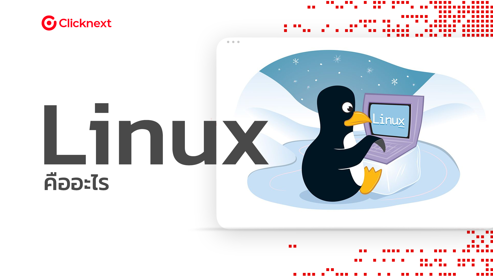

 Linux เป็นระบบปฏิบัติการที่มีลักษณะคล้ายกับ Unix และเป็น Open Source หรือโอเพนซอร์ส ซึ่งหมายถึงสามารถเข้าถึงและแก้ไขรหัสทั้งหมดของระบบได้โดยไม่มีข้อจำกัด. นอกจากนี้, ส่วนใหญ่ของ Linux มีความยืดหยุ่นและสามารถปรับแต่งได้ตามความต้องการของผู้ใช้ Linux Distributions คือ ระบบปฏิบัติการแบบโอเพนซอร์สซึ่งประกอบไปด้วยโอเพนซอร์ส Components ต่างๆ และเราสามารถรวบรวมและเลือกติดตั้งได้ตามแบบที่เราชอบ เช่น Ubuntu Fedora หรือ Redhat BackNext